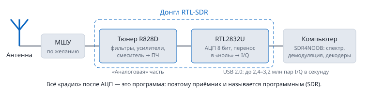

Содержание › Основы радиоприёма
Приёмники SDR
Что такое SDR#
SDR (Software Defined Radio, программно-определяемое радио) — приёмник, в котором железо только переносит кусок эфира на низкую частоту и оцифровывает его, а всё остальное — фильтры, демодуляция, декодирование — делает программа. Поэтому один и тот же приёмник (например, недорогой RTL-SDR) за пару секунд превращается из FM-приёмника в декодер самолётов или метеоспутника.

Приёмник отдаёт в компьютер поток I/Q-отсчётов — пар чисел, которые описывают и амплитуду, и фазу сигнала. Благодаря паре (а не одному числу) программа отличает частоты выше центра от частот ниже центра, и на спектре видно полосу шириной, равной частоте дискретизации.
АЦП и разрядность#
АЦП (аналого-цифровой преобразователь) много миллионов раз в секунду измеряет напряжение и записывает его числом. Разрядность — сколько бит в этом числе. От неё зависит динамический диапазон: насколько слабый сигнал можно услышать рядом с сильным, пока сильный ещё не «упирается» в максимум шкалы.
Теоретический предел: ДД ≈ 6,02·N + 1,76 dB, где N — число бит.
| Разрядность | Уровней | ДД (теория) | Примеры |
|---|---|---|---|
| 8 бит | 256 | ≈ 50 dB | RTL-SDR, HackRF |
| 12 бит | 4 096 | ≈ 74 dB | Airspy R2/Mini, LimeSDR, PlutoSDR |
| 14 бит | 16 384 | ≈ 86 dB | SDRplay RSP1A/RSPdx |
| 16 бит | 65 536 | ≈ 98 dB | профессиональные КВ-приёмники |
На практике всё лучше, чем в таблице: приёмник оцифровывает с частотой выше нужной, а потом децимирует (прореживает с фильтрацией) до полосы обзора и ещё сильнее в канале демодулятора. Например, RTL2832U оцифровывает с частотой 28,8 МГц и децимирует до 2,4 МГц. Каждое сужение полосы в 10 раз даёт ~10 dB выигрыша обработки. Поэтому в узком канале NFM 8-битный приёмник ведёт себя как 12–13-битный. Но если в полосе есть очень мощная станция, 8 бит всё равно мало — отсюда перегрузка.
Частота дискретизации и полоса#
- Частота дискретизации fs — сколько пар I/Q в секунду отдаёт приёмник. Она же — ширина видимого спектра (полоса обзора): при 2,4 МГц и настройке на 101,0 МГц вы видите 99,8–102,2 МГц.
- Края полосы (по ~10 % с каждой стороны) заваливаются фильтром — сигналы там слабее.
- Предел у каждого приёмника свой: Airspy R2 — 10 МГц, SDRplay — до 10 МГц, HackRF — до 20 МГц. Например, RTL2832U допускает 0,225–0,3 и 0,9–3,2 МГц. Устойчиво — до 2,4 МГц; 2,88–3,2 МГц на многих компьютерах теряют отсчёты (щелчки в звуке, обрывы декодеров).
- В SDR4NOOB полоса выбирается полем «Полоса» (Радио, ТВ) или «Дискретизация» (Спутники, ADS-B). Шире — больше видно, но больше нагрузка на процессор и больше шансов, что в полосу попадёт мешающая станция.
Коэффициент шума и чувствительность#
Любой усилитель добавляет свой шум. Коэффициент шума (КШ, NF) показывает, во сколько раз (в dB) ухудшается отношение сигнал/шум при прохождении через приёмник. Идеал — 0 dB. У тюнеров R820T/R828D на УКВ — около 3,5–4 dB, к краям диапазона хуже.
Самый слабый сигнал, который ещё виден, оценивается так:
Шум, dBm = −174 + КШ + 10·lg(полоса, Гц)
Пример: КШ 4 dB, канал NFM 12,5 кГц → −174 + 4 + 41 = −129 dBm (≈ 0,08 мкВ на 50 Ом). Для разборчивой речи сигнал должен быть на ~10 dB выше, то есть около −119 dBm.
Кабель до первого усилителя прибавляет свои потери прямо к КШ: 3 dB потерь в кабеле = КШ хуже на 3 dB. Поэтому МШУ ставят у антенны, а не у компьютера.
Тюнеры#
| Тюнер | Диапазон | Особенности |
|---|---|---|
| R820T / R820T2 | 24–1766 МГц | Самый распространённый, низкая ПЧ (нет пика в центре от смесителя), 29 ступеней усиления. RTL-SDR v3, Nooelec. |
| R828D | 24–1766 МГц | Родственник R820T с несколькими входами. В RTL-SDR Blog V4 — вместе с конвертером КВ и набором входных фильтров, поэтому V4 принимает от 0,5 МГц. |
| E4000 | ≈52–2200 МГц с провалом ≈1100–1250 МГц | Старый, нулевая ПЧ (сильный пик в центре), больше не выпускается. |
| FC0012 / FC0013 / FC2580 | 22–948 / 22–1100 / 146–308 и 438–924 МГц | Первые дешёвые ТВ-донглы, слабые. |
Тип тюнера SDR4NOOB показывает после запуска приёма — в строке состояния окна (в «Самолётах» — под карточкой «Приёмник 1090 МГц»).
Сравнение приёмников#
| Приёмник | Диапазон | Полоса | АЦП | Передача | Цена* |
|---|---|---|---|---|---|
| RTL-SDR Blog V4 | 0,5–1766 МГц (КВ через встроенный конвертер) | 2,4 (3,2) МГц | 8 бит | нет | ≈ $40 |
| RTL-SDR Blog V3 | 0,5–1766 МГц (КВ — прямая оцифровка, хуже V4) | 2,4 (3,2) МГц | 8 бит | нет | ≈ $35 |
| Nooelec NESDR SMArt v5 | ≈25–1750 МГц | 2,4 МГц | 8 бит | нет | ≈ $35 |
| HackRF One | 1 МГц – 6 ГГц | до 20 МГц | 8 бит | да (полудуплекс) | ≈ $330 |
| Airspy R2 | 24–1800 МГц | 10 МГц | 12 бит | нет | ≈ $170 |
| Airspy Mini | 24–1700 МГц | 6 МГц | 12 бит | нет | ≈ $100 |
| Airspy HF+ Discovery | 0,5 кГц – 31 МГц и 60–260 МГц | ≈ 0,66 МГц | ДД ≈110 dB | нет | ≈ $170 |
| SDRplay RSP1A / RSP1B | 1 кГц – 2 ГГц | 10 МГц | 14 бит | нет | ≈ $130 |
| SDRplay RSPdx-R2 | 1 кГц – 2 ГГц, 3 антенных входа | 10 МГц | 14 бит | нет | ≈ $250 |
| LimeSDR (USB) | 0,1–3800 МГц | до 61 МГц | 12 бит | да (2×2) | от $300 |
| ADALM-Pluto (PlutoSDR) | 325–3800 МГц (с доработкой 70–6000) | до 20 МГц | 12 бит | да (1×1) | ≈ $220 |
* Ориентир на 2026 г. без доставки и пошлин; в России цены выше. Программа работает с любым USB радиоприёмником (SDR);
для приёмников на RTL2832U (первые три строки) драйвер встроен. Через меню «Режим → Устройства…» можно подключить и другие: HackRF One и
Airspy R2/Mini (нужна их библиотека: DLL в Windows, brew install hackrf airspy на Mac), а также сетевой rtl_tcp (в том числе rsp_tcp для SDRplay).
Airspy HF+, LimeSDR и PlutoSDR из таблицы пока не поддерживаются.
Совет новичку: RTL-SDR Blog V4 — лучший выбор для начала. Переходить на 12–14-битный приёмник стоит, когда упрётесь в перегрузку от мощных станций рядом (центр города, рядом с телебашней) или захотите видеть 10 МГц эфира сразу.
Особенности RTL-SDR Blog V4#
- TCXO — термокомпенсированный кварцевый генератор с точностью ~1 ppm. Ошибка 1 ppm — это 138 Гц на 137,9 МГц и ~1,1 кГц на 1090 МГц. У дешёвых донглов без TCXO бывает 50–100 ppm (до 40 кГц на 433 МГц!) и частота «плывёт» при нагреве. Поэтому у V4 «Коррекция ppm» обычно 0.
- Bias-T — 4,5 В постоянного тока на центральной жиле антенного разъёма для питания МШУ или активной антенны. Включается галочкой «Bias-T». На пассивной антенне, замкнутой по постоянному току (петлевой диполь, некоторые QFH), включать нельзя — будет короткое замыкание.
- КВ без конвертера: ниже 28,8 МГц V4 сам переносит сигнал вверх встроенным преобразователем — просто наберите частоту.
- Металлический корпус работает радиатором и экраном; горячий на ощупь — нормально.
Драйверы: WinUSB и Zadig#
Windows считает донгл ТВ-тюнером и ставит «родной» драйвер Realtek (для DVB-T), через который SDR-программы работать не могут. Нужно один раз заменить драйвер на WinUSB программой Zadig:
- Скачайте Zadig с официального сайта zadig.akeo.ie, запустите.
- Options → List All Devices. Выберите «Bulk-In, Interface (Interface 0)» или «RTL2838UHIDIR» (это донгл). Убедитесь, что USB ID начинается с 0BDA 2838.
- Справа выберите WinUSB и нажмите Replace Driver.
SDR4NOOB содержит свою сборку librtlsdr (с поддержкой V4), ставить SDR# или системные драйверы не нужно.
См. также: Усиление и АРУ, Неполадки.